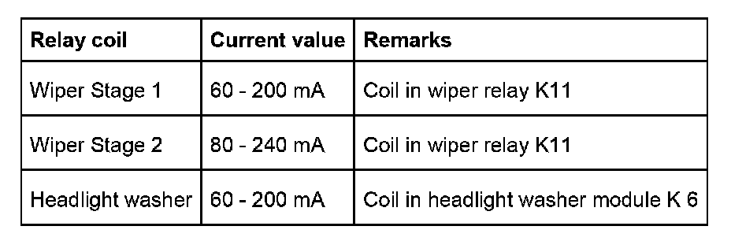
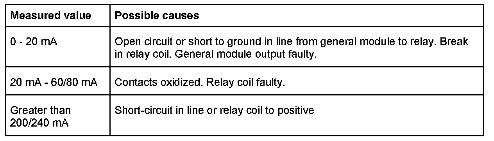

Wipe Motor
Internal Current Measurement In General Module
Internal current measurement via diagnosis
Diagnosis of the ZKE V general module makes it possible to read out the current values of the relay coils for the windshield wiper relays (stage 1 and stage 2) and the relay for the headlight washer system connected to the general module.
In order to obtain an exact test result, the relay coil to be tested is activated during the test and the current value read out of the general module. The current is evaluated automatically in the test module.
Setpoints
The following setpoints apply for an operating voltage from 8 V to 16 V:

Fault code evaluation
If the setpoint is reached during current measurement, the following components are OK:
- Relay output in general module
- Line between general module and relay
- Fuse and positive supply for relay
- Relay coil in relay
If the setpoint is not reached, the following faults may be detected:

The following faults cannot be detected automatically:
- Relay contacts defective (load circuit of relay defective)
- Line from relay to wiper motor/headlight washer pump defective
- Wiper motor/headlight washer pump defective
These components are checked in the following test steps.